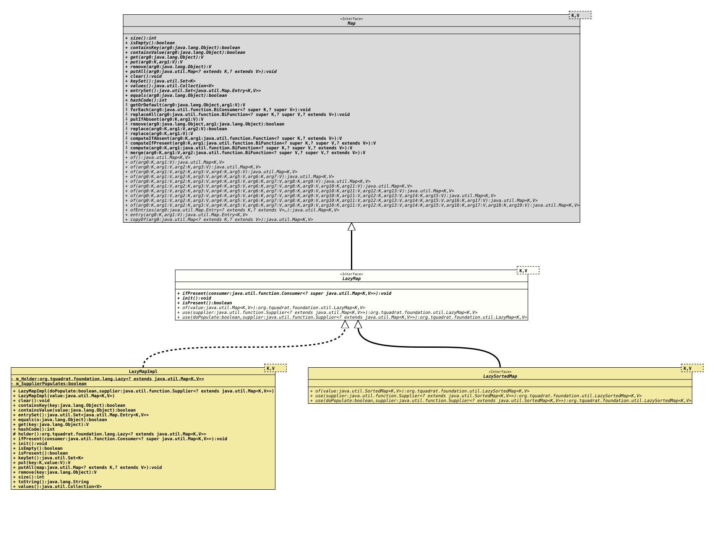

Interface LazyMap<K,V>
- Type Parameters:
K- The type of keys maintained by this map.V- The type of mapped values.
- All Superinterfaces:
Map<K,V>
- All Known Subinterfaces:
LazySortedMap<K,V>
- All Known Implementing Classes:
LazyMapImpl, LazySortedMapImpl
@ClassVersion(sourceVersion="$Id: LazyMap.java 1032 2022-04-10 17:27:44Z tquadrat $")
@API(status=STABLE,
since="0.0.5")
public sealed interface LazyMap<K,V>
extends Map<K,V>
permits LazySortedMap<K,V>, LazyMapImpl<K,V>
The interface for a
Map
that will be initialised only when required.- Note:
-
- There is no implementation of a
map()method in this interface because it is assumed that this would be confusing: such amap()method would operate on the whole map that is wrapped by this value, and not on an entry as one would expect. Refer to .
- There is no implementation of a
- Author:
- Thomas Thrien (thomas.thrien@tquadrat.org)
- Version:
- $Id: LazyMap.java 1032 2022-04-10 17:27:44Z tquadrat $
- Since:
- 0.0.5
- See Also:
- UML Diagram
-

UML Diagram for "org.tquadrat.foundation.util.LazyMap"
{kind=link}
-
Nested Class Summary
-
Method Summary
Modifier and TypeMethodDescriptionvoidIf thisLazyMapinstance has been initialised already, the providedConsumerwill be executed; otherwise nothing happens.voidinit()Forces the initialisation of thisLazyMapinstance.booleanChecks whether thisLazyMapinstance has been initialised already.static <K,V> LazyMap <K, V> Creates a newLazyMapinstance that is already initialised.static <K,V> LazyMap <K, V> Creates a newLazyMapinstance that uses the given supplier to initialise.static <K,V> LazyMap <K, V> Creates a newLazyMapinstance that uses the given supplier to create the internal map, but that supplier does not provide values on initialisation.Methods inherited from interface Map
clear, compute, computeIfAbsent, computeIfPresent, containsKey, containsValue, entrySet, equals, forEach, get, getOrDefault, hashCode, isEmpty, keySet, merge, put, putAll, putIfAbsent, remove, remove, replace, replace, replaceAll, size, values
-
Method Details
-
ifPresent
-
init
void init()Forces the initialisation of thisLazyMapinstance. -
isPresent
boolean isPresent()Checks whether thisLazyMapinstance has been initialised already.- Returns:
trueif the instance was initialised,falseotherwise.
-
of
-
use
@API(status=STABLE, since="0.0.5") static <K,V> LazyMap<K,V> use(Supplier<? extends Map<K, V>> supplier) Creates a newLazyMapinstance that uses the given supplier to create the internal map, but that supplier does not provide values on initialisation.- Type Parameters:
K- The type of keys maintained by this map.V- The type of mapped values.- Parameters:
supplier- The supplier that initialises for the new instance ofLazyMapwhen needed.- Returns:
- The new instance.
-
use
@API(status=STABLE, since="0.0.5") static <K,V> LazyMap<K,V> use(boolean doPopulate, Supplier<? extends Map<K, V>> supplier) Creates a newLazyMapinstance that uses the given supplier to initialise.- Type Parameters:
K- The type of keys maintained by this map.V- The type of mapped values.- Parameters:
doPopulate-trueif the provided supplier will put entries to the map on initialisation,falseif it will create an empty map.supplier- The supplier that initialises for the new instance ofLazyMapwhen needed.- Returns:
- The new instance.
-